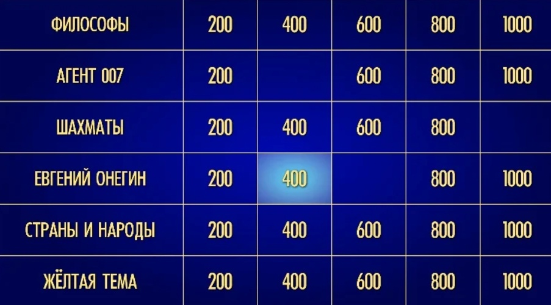
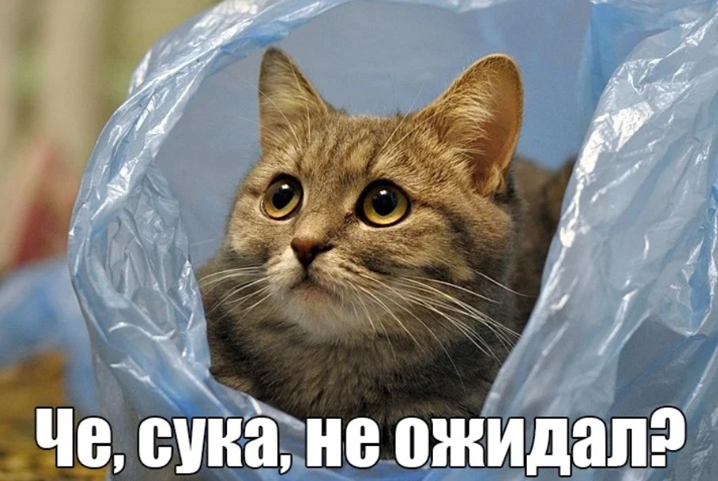
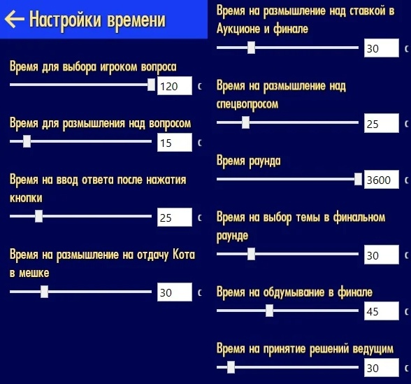
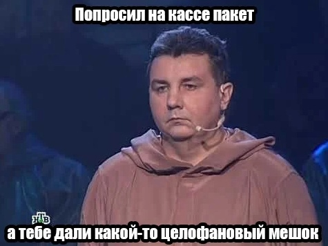
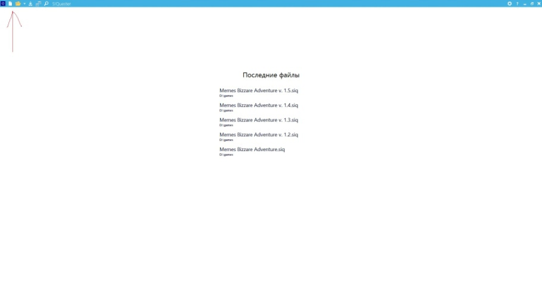
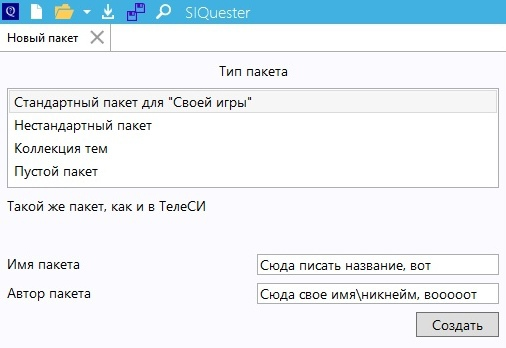
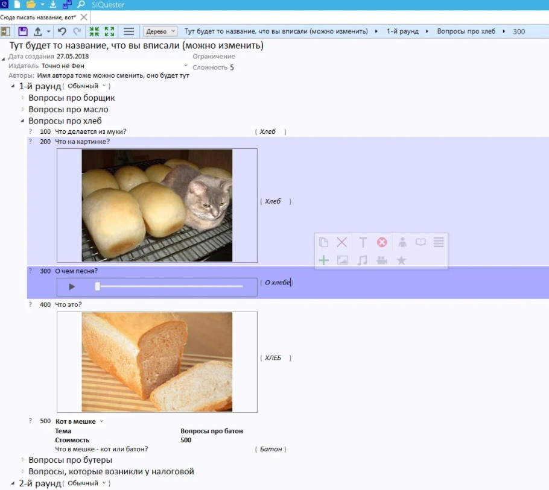

ДЛЯ ИГРОКОВ
Итак, вы решили поиграть в «Свояк». Что вам нужно знать?
ГДЕ СКАЧАТЬ
SIGame можно скачать с официального сайта разработчика. Там же можно стянуть редактор пакетов с вопросами, но о нем позже. Сайт максимально прост в понимании и поиске нужной информации, поэтому если вы не комментатор с ютуба — найдете за пару секунд.
vladimirkhil.com/si/gameКАК ИГРАТЬ
Правила «Своей Игры» достаточно просты. Перед вами есть табло из тем. Музыка, фильмы, игры, картины, спорт, книги — это может быть что угодно (даже аниме!). В каждой категории есть несколько вопросов, которые, обычно, отличаются ценой. Ну вы знаете, вот эти вот «Юмор за 200», «фильмы за 400», эта штука пошла именно из «Свояка».

От цены зависит сложность вопроса. Чем больше стоимость — тем труднее будет задачка.
Когда первый игрок выбирает вопрос, все участники игры (кроме, разумеется, ведущего), могут после зачитывания оного нажать на специальную кнопку, тем самым показывая желание ответить на вопрос.
красным выделены зоны, на которые можно нажать ЛКМ, чтобы ответить на вопрос
Но обычно люди назначают себе специальную клавишу, которую они будут жать прямо как настоящую кнопку в настоящем телешоу. Обычно все делают это на пробел, но тут кому как удобнее. Можете хоть на F13 забить, если вам так нравится. Выбрать кнопку можно в настройках, что хитро спрятались в нижнем левом углу экрана (указаны фиолетовой стрелочкой для людей, не вкачивающих Восприятие).
Да, кстати, пока вы не вышли из настроек. Дружеский совет: зайдите во вкладку «Приложение» и снимите галочку с пункта «Звук». Это выключит все внутри игровые звуки, музыкальные и видео вопросы вы будете слышать вне зависимости от настроек.
Вернемся к правилам. Если вы нажали кнопку ответа и дали правильный ответ — вы получаете указанную сумму очков. Если вы сделали то же самое, но НЕ ответили на вопрос — вы ее теряете. Не нажали кнопку вообще? Значит, с вашим внутриигровым балансом ничего не произошло. Вы просто остались в стороне.
Помимо обычных вопросов есть небольшие сюрпризы:
1. Кот в мешке обычный
Вопрос, который обязательно нужно отдать. Его тема может отличаться от указанной категории. Скажем, вы выбрали вопрос «Книги за 300», а там кот в мешке на тему поэзии, стоймость 500. Абсолютно нормальная ситуация.
2. Кот в мешке обобщенный
То же самое, только этого кота вы можете как отдать, так и оставить себе. ВАЖНО: только обобщенному коту в мешке можно прописать функцию «показать тему кота ДО выдачи этого самого кота кому-то из игроков». Я для честности игры обычно всегда выбираю его и прописываю эту функцию, чтобы кот не был уж совсем случайным наобумом.
3. Аукцион
На этот вопрос ответит не тот, кто раньше нажмет на кнопку, а тот, кто предложит за него больше очков. Участники по очереди ставят свои кровные, стараясь перебить ставку предыдущего. А еще можно уйти в ВА-БАНК. Тогда все следующие игроки тоже должны будут идти в ва-банк. Или пасовать, отдавая вопрос победителю.
И да, если вы выиграли торги за вопрос — вам придется на него отвечать. И свою ставку вы можете еще и потерять, дав неверный ответ.
4. Вопрос от спонсора
Если вы попали на этот пункт — вы везунчик. Вопрос только для вас, в случае неудачи очков вы не теряете, а при правильном ответе вы получаете удвоенную награду. Халява!
Так же у игры есть финал. Обычно это несколько вопросов, каждый принадлежит разной теме. Игроки по очереди убирают пункт за пунктом, пока не останется одна тема, на которую все участники и будут отвечать. Цена вопроса — то, что сами игроки отважатся поставить. И, как обычно, если ответ неправильный, то они указанную сумму теряют.
Кстати, если вы не согласны с решением ведущего касательно ответа на последний вопрос, справа снизу вы можете нажать кнопку «оспорить» и начать голосование. Если большинство проголосует за то, что ведущий ведет откровенный произвол, баллы вернутся на место. Но обычно эта функция нужна только для игр с рандомами — друзей всегда можно послать к черту через войс-чат или при личной встрече.
КАК ИГРАТЬ ВЕДУЩЕМУ
Ну какая игра без человека, что своим властвующим перстом будет указывать плебеям на их ошибки и вознаграждать мудрецов за их острый ум незримыми очками? Геймплей за ведущего очень прост и нужен для тех людей, что хотят зависнуть в «Свояк» с пацанами, но при этом не хотят думать. Ну и для авторов пакетов, конечно.
У них все просто — сравнивай ответ игрока с правильным и давай\отнимай у него очки. Так же ведущий может определять игрока, что в начале игры первым будет выбирать вопрос и снимать\давать очки на свое усмотрение с помощью панели в правом нижнем углу.
Ой-ой-ой, чуть не забыл. Мистер ведущий, не забудь в настройках подкрутить время, отведенное на действия игроков: длина раунда, время на дачу ответа и т.д. Настраивайте, как вам удобно, лишь скажу что время раунда стоит выкрутить на максимум, если хотите сыграть все вопросы. Я настроил вот так:
Через настройки помимо времени можно настроить фальстарты и прочие полезные вещи. Потратье минутку и побродите там, чтобы настроить все необходимое под себя. И да, когда создаете сервер с пакетом — НЕ СТАВЬТЕ ГАЛОЧКУ НА СЛУЧАЙНЫЕ СПЕЦ-ВОПРОСЫ. Если вы ее поставите, игра по своему велению превратит вопросы в вашем пакете в случайных котов в мешке, аукционы и прочее.
ГДЕ ВЗЯТЬ ПАКЕТЫ ВОПРОСОВ
Их можно найти на все том же официальном сайте SIGame в галерее, а так же в официальном паблике ВК. Помимо этого есть куча групп и сообществ, посвященных «Свояку», которые так же собираютпроизводят свои пакеты.

В целом, это вся основная информация, что вам нужна. И если вас напугала эта стена текста — не пугайтесь, на самом деле в «Свояке» все интуитивно понятно и разобраться во всех сложностях можно чуть ли не на ощупь.
И да, не забудьте настроить игровой профиль! Модный ник, стильная аватарка — ну куда же без этого?
Вот тут можно все настроить. К слову, ваша аватарка должна быть на компьютере. Игра ее не сохраняет, поэтому удалили картинку — вместо аватарки пустое место.
ДЛЯ ТЕХ, КТО ХОЧЕТ СОЗДАВАТЬ СВОИ ПАКЕТЫ ВОПРОСОВ
И вот вы оглянуться не успели, как у вас за плечами уже около пары десятков отыгранных пакетов. За это время вы наелись любительским контентом по самые уши: одни и те же вопросы (УГАДАЙТЕ, КОМУ ПРИНАДЛЕЖИТ ЦИТАТА «ЧТО ТАКОЕ БЕЗУМИЕ» — этот вопрос всем любителям геймерских паков встречается чуть ли не каждую вторую игру), идиотские загадки, ошибки по фактике… В общем, дерьмо случается.
Насмотревшись на этот цирк, вы решаете сделать СВОЙ, КРУТОЙ, КЛАССНЫЙ ПАКЕТ С ВОПРОСАМИ. Скажем, вы киноман? Тогда вы ЩЩЩАС покажете всем этим дилетантам, что такое ВОПРОСЫ ПРО КИНО, а не банальные «угадай Охотников за Привидениями по их музыкальной теме». Ну что же, вперед!
1. Качаем редактор пакетов.
Берется на все том же сайте, где и сам «Свояк». Где именно — НЕ СКАЖУ. Считайте это проверкой на IQ — если вы не в состоянии найти синенькую ссылочку на сайте в 1 страничку, то вам не стоит заниматься пакетами вопросов.
Издевательски посмеивается
Ладно, это было комедийное отступление. Просто 1 пункт был слишком маленький, и я решил разбавить его водой. КАКОВ ХИТРЕЦ.
2. Открываем редактор.
Мы запускаем SIQester и видим примерно такую картину:
В центре вам предложат открыть старые пакеты вопросов (если вы уже занимались какими-либо пакетами), а слева вверху (я даже красной стрелочкой указал где) можно как открыть файл со своего диска, так и создать новый. Создаем новый.

Настройки отличаются количеством раундов, категорий и вопросов в этих самых категориях, а также наличием\отсутствием финального раунда. В целом, берите любой вариант — в процессе создания пакета любой элемент игры можно спокойно удалять\создавать, так что если вы выберете стандартный формат из 3 раундов, никто не запретит вам добавить, скажем, еще 12.
И ВСЕ ПРО АНИМЕ, АХАХАХАХАХХАХА извините
3. Начинаем творить!

Вот как-то так будет выглядеть рабочее пространство. Ваш пакет — это такое дерево, где все идет по убывающей. Сначала раунды, которые раскрываются на категории. Потом категории разворачиваются на вопросы, а внутри них вы настриваете содержание. По порядку варианты вопросов: текстовый, картинка, музыка, еще картика, кот в мешке. В скобочках вы пишите ответ, который будет отображаться ведущему как правильный (через пкм можно настроить дополнительные ответы и неправильные варианты). Цифры слева — цена вопроса, ее тоже можно регулировать.
Еще можно вставить видео, но тут (как и со всеми медиа-файлами в пакете) надо помнить одну вещь — размер файла. Старайтесь по возможности не всовывать в пакет вещи весом больше мегабайта-двух, так как игра не всегда успевает шустро прогружать большие файлы. Особенно, если игроки с медленным интернетом или подключаются где-нибудь из Зимбабве.
Также желательно чтобы у игроков была не паленая операционка, способная поддерживать .NET Framework 4.6 или лучше. Так как от этого будет зависеть, будут ли у вас вообще отображаться медиа-файлы. В случае технических проблем есть онлайн версия. В ней нельзя выбрать аватарку, но зато она работает как часы и без задержек.
Настраивать содержимое вопроса можно, выбрав его ЛКМ. После этого появляется данная менюшка с очень понятным и гибким редактором. Я даже его расписывать толком не буду — там все максимально просто. Единственные 2 вещи:
1. С помощью зеленого плюса можно добавлять пункты к вопросу. Они будут воспроизводиться сверху-вниз по порядку. Менять пункты можно синей стрелкой.
2.Иногда, при редактировании обобщенного кота в мешке, некоторые функции этого кота пропадают еще на этапе создания пакетов. Это глюк, появляющийся в дополнительных раундах\категориях (дополнительные = те, которые вы добавили сверх обычных 3 раундов\5 категорий). Просто создайте кота в первых 3 раундах\категориях и перетащите готового мышкой вниз. Или пересоздайте.
Главное без паники, ошибки случаются, так что перед серьезным стримом или еще каким паказом своего крутого пакета обязательно протестируйте его на вшивость с друзьями.
Дальше вы разберетесь сами. Только не забывайте сохранять свой труд — а то вдруг что потеряется.
1. Старайтесь писать условия категорий\вопросов максимально понятно. Тестируйте формулировки на играх с друзьями. Если они не поняли вопрос — возможно, вы его коряво написали.
Пример: категория называется «Музыкальные вопросы». Играет OST Ведьмака. Ваш друг Вован жмет кнопку и кричит «ВЕДЬМАК». А вы не засчитываете, ведь надо было назвать точную часть! Но откуда это знать Вовану? Чтобы конфуза не было, пишите в условиях «назовите ТОЧНОЕ название игры» или еще как-то уточните этот момент. Ну или словами скажите «Вован, назови часть, а то не засчитаю».
2. Все файлы для пакета складывайте в одну папку. В случае редактирования пакета у вас будет место, где взять файлы заново. А когда закончите — все лишнее можно удалить одним кликом.
В случае, если исходники вы уже удалили, а файл внутри пакета вам нужен, его можно выгрузить из пакета через все тот же SIQuester. Только потом спасенный файл нужно конвертировать через какую-нибудь программу (например, фотошоп или Sony Vegas).
3. Делайте пакет грамотно. Не спешите, посидите над ним пару дней, перепроверьте. Не гнушайтесь обрезать картинки и звук. Очень плохо качать музыку для вопроса из ВК и засовывать все ее 3 минуты 12 секунд (или сколько там будет) в игру, заставляя игроков все 3 минуты 12 секунд сидеть и слушать. Обрежьте ее до нужных 20 секунд через программы. Урежьте большие картинки до 720p, чтобы они быстро грузились и так далее.
4. Не будьте банальным. Прежде чем делать свой пакет, посмотрите или поиграйте чужие на ту же тему, на которую вы хотите делать, чтобы не повторять одни и те же популярные вопросы. Главная тема The Witcher 3, музыка из меню Divinity Original Sin, главная тема «Хороший, Плохой, Злой», скриншоты Bioshock — поверьте, все эти вещи и им подобные есть в десятках, если не в сотнях пакетов. Будьте оригинальным — вставьте какую-то другую песню из «Ведьмака» или добавьте такой скриншот из популярной игры, по которому она не сразу угадывается.
5. Держите баланс сложности. Оставьте простейшие вопросы на первый раунд, а сложную дичь — на последний. То же самое с дешевыми\дорогими вопросами. Старайтесь идти по нарастающей, а не «Вопрос за 100 — как звали третьего по счету статиста в сцене, где Арагорн ведет свое войско в последнем фильме по Властелину Колец?». Пожалейте тех, кто будет играть в ваш пакет.